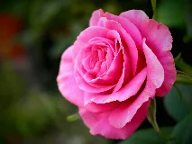
Rosewiki-fr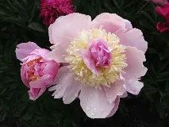
Pivoinewiki-fr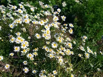
Margueritewiki-fr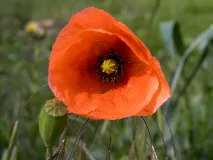
Coquelicotwiki-fr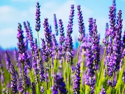
Lavandewiki-fr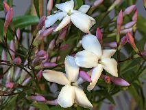
Jasminwiki-fr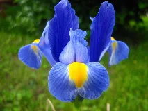
Iriswiki-fr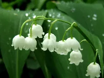
Muguetwiki-fr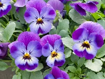
Violettewiki-fr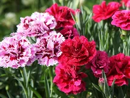
Œilletwiki-fr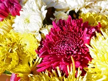
Chrysanthèmewiki-fr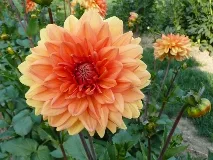
Dahliawiki-fr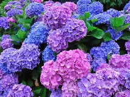
Hortensiabing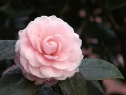
Caméliawiki-fr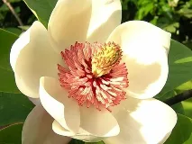
Magnoliawiki-fr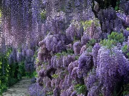
Glycinewiki-fr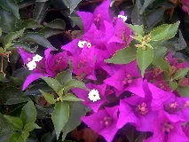
Bougainvillierwiki-fr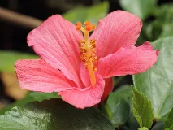
Hibiscuswiki-fr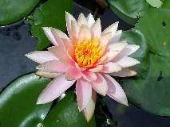
Nénupharbing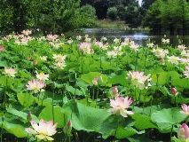
Lotus sacréwiki-fr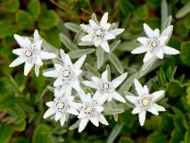
Edelweisswiki-fr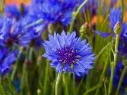
Bleuetwiki-fr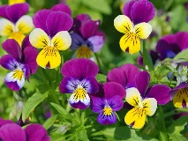
Penséewiki-fr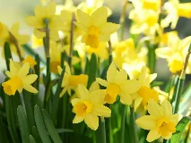
Jonquillewiki-fr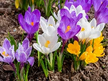
Crocuswiki-fr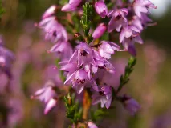
Bruyèrewiki-fr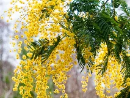
Mimosawiki-fr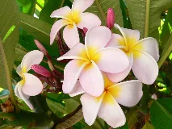
Frangipanierwiki-fr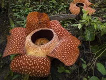
Rafflesiawiki-fr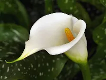
Arumwiki-fr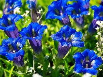
Gentianewiki-fr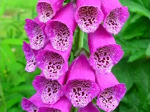
Digitale pourprewiki-fr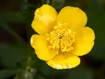
Bouton-d'orwiki-fr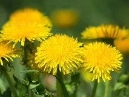
Pissenlitwiki-fr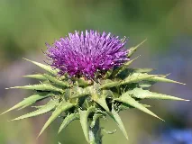
Chardonwiki-fr